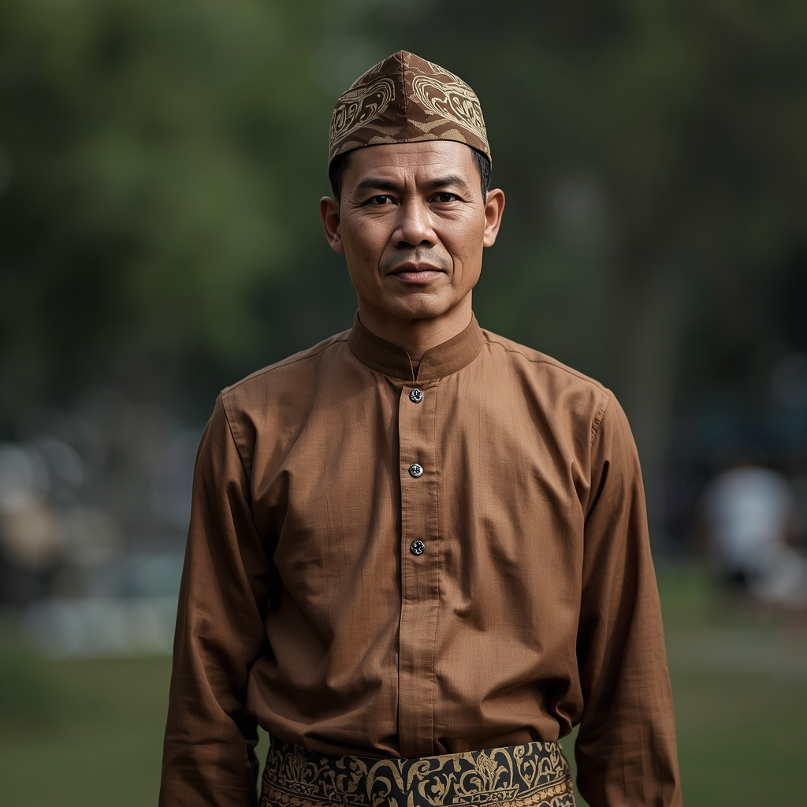

🧑🤝🧑 世界の民族・人びと
People of the World。国境を越えて暮らす人びとを、地域ごとに紹介します。伝統だけでなく、今の暮らしも一緒に。

マレー人
🗣 使用言語
マレー語
👥 人口の目安
約3,000万人以上
👘 伝統衣装
男性は「バジュ・ムラユ」と呼ばれる立て襟の上下に腰布(サンピン)を合わせ、頭に帽子(ソンコック)や布(タンジャ)をかぶる。女性は「バジュ・クロン」やクバヤを着用し、金銀の糸を織り込んだ絹織物「ソンケット」は儀式や祝祭の正装に用いられる。
🏠 住居
伝統的には高床式の木造家屋「ルマ・パンゴン」に住み、湿気や洪水、害獣を避けるため床を地面から持ち上げ、風通しの良い造りになっている。
🍲 食文化
米を主食とし、ココナツミルクや香辛料を使った料理が特徴で、ナシレマ(ココナツライス)、サテ(串焼き肉)、レンダン(牛肉のスパイス煮込み)などが代表的。
🎵 音楽・踊り
マレー半島の伝統音楽ではゴング(銅鑼)や太鼓を用いた「ガムラン」に似た合奏や、詩の掛け合いである「パントゥン」の朗誦、影絵芝居ワヤン・クリを伴う音楽劇が伝わる。
🎉 行事・祭り
断食月明けの祝祭「ハリラヤ・アイディルフィトリ」が最大の年中行事で、新調した衣服を着て親族を訪ね合う。
🙏 信仰・価値観
15世紀頃にイスラム教(スンニ派)を受容して以来、イスラムはマレー人の民族的アイデンティティと深く結びついており、日常生活や慣習法(アダット)にも影響を与えている。
📜 歴史
マレー人はマレー半島、スマトラ島東部、ボルネオ島沿岸部などマリタイム(海域)東南アジアを起源とするオーストロネシア語族の民族で、古くはヒンドゥー教・仏教の影響を受けた王国を築いたが、15世紀のマラッカ王国の時代にイスラム教へ改宗した。その後、貿易や移住を通じてタイ、ジャワ、インドなど周辺文化とも交わりながら独自の文化を形成した。
🏙 現代の暮らし
現在はマレーシア、インドネシア、ブルネイ、シンガポールなどで多数派または主要民族として暮らし、都市部では近代的な生活を送る一方、農村部では伝統的な慣習や祭礼が今も受け継がれている。
🇯🇵 日本との関係
マレーシアは1982年に日本の労働倫理や技術に学ぶ「ルックイースト政策」を導入し、これまでに2万6千人以上のマレーシアの若者が日本へ留学・研修に訪れており、経済・教育面で日本との結びつきが強い。
🌍 関連する国


出典: https://en.wikipedia.org/wiki/Malays_(ethnic_group)(2026-09-01時点) / https://www.britannica.com/topic/Malay-people(2026-09-01時点) / https://www.my.emb-japan.go.jp/itpr_en/LEP40.html(2026-09-01時点)